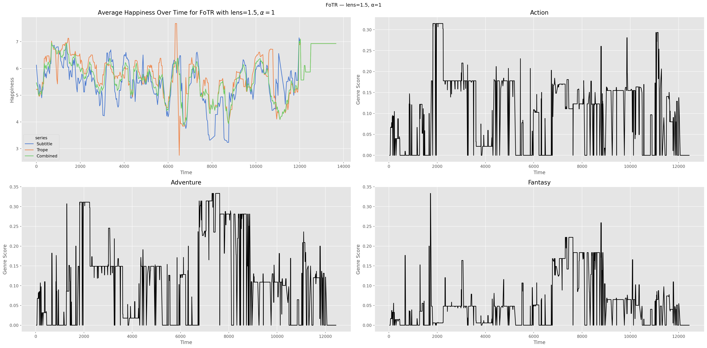

import sys, os
from pathlib import Path
_project_root = Path.cwd()
while not (_project_root / "src").exists():
_project_root = _project_root.parent
os.chdir(_project_root)Notebook Test
Running the pipeline from subtitle and time-tagged trope file => results
Setup
from pathlib import Path
import random
from itertools import product
import srt
import pandas as pd
import chardet
import numpy as np
import seaborn as sns
import matplotlib.pyplot as plt
from src.hedonometer import parse_text, import_hedonometer_as_dict# constants
plt.style.use(["ggplot"])
IMG_WIDTH = 12
sns.set_palette("muted")Variables
srt_file = Path(
"Data/subtitles/Fellowship Of The Ring 2001 [Extended Edition] SDH-en.srt"
)
trope_file = Path("Data/trope_time_series/Fellowship_of_the_Ring_filled_copy.csv")
movie_title = "FoTR"
top_genres = ["Action", "Adventure", "Fantasy"]
# srt_file = Path("Data/subtitles/Clueless.1995.srt")
# trope_file = Path("Data/trope_time_series/clueless_tropes.csv")
# movie_title = "Clueless"Design
- Wrangle data sources:
- subtitle file
- time-tagged trope file
- Run hedonometer on subtitles, tropes, and the two together
- Calculate genre expectation for each.
Wrangling
Subtitle File
First we load in the subtitle file and clean up the delta columns. To do so we need a custom parser that works on our two formats (ugh). That’s a claude job, I’m sorry.
def parse_timestamp(t):
if pd.isna(t):
return np.nan
# already a timedelta
if hasattr(t, "total_seconds"):
return t.total_seconds()
t = str(t).strip()
if ":" in t:
parts = [int(p) for p in t.split(":")]
return parts[0] * 3600 + parts[1] * 60 + parts[2]
if "." in t:
parts = [int(p) for p in t.split(".")]
if len(parts) == 3:
return parts[0] * 3600 + parts[1] * 60 + parts[2]
elif len(parts) == 2:
return parts[0] * 60 + parts[1]
try:
return float(t)
except Exception as e:
print(f"Due to {e}, casting {t} to nan")
return np.nanNow we can start going
with open(srt_file, "r") as f:
subtitle_generator = srt.parse(f.read())
subtitles = list(subtitle_generator)
subtitle_df = pd.DataFrame(
[{"start": s.start, "end": s.end, "content": s.content} for s in subtitles]
)
subtitle_df["start"] = subtitle_df["start"].apply(parse_timestamp)
subtitle_df["end"] = subtitle_df["end"].apply(parse_timestamp)
subtitle_df = subtitle_df.sort_values(by="start", ascending=True)
subtitle_df.head()| start | end | content | |
|---|---|---|---|
| 0 | 31.571 | 34.490 | [FEMALE WHISPERS IN ELVISH] |
| 1 | 34.491 | 37.743 | FEMALE VOICE:\nThe world <i>is</i> changed. |
| 2 | 37.744 | 41.497 | <i>I feel it in the water.</i> |
| 3 | 41.498 | 46.001 | <i>I feel it in the earth.</i> |
| 4 | 46.002 | 49.421 | <i>I smell it in the air.</i> |
Do some light html NLP, then parse the text with our standard tokenizer.
subtitle_df["content"] = subtitle_df["content"].str.replace("\n", " ")
subtitle_df["content"] = subtitle_df["content"].str.replace("<i>", " ")
subtitle_df["content"] = subtitle_df["content"].str.replace("</i>", " ")
subtitle_df["content"] = subtitle_df["content"].apply(parse_text)Add a wordcount column:
subtitle_df["wordcount"] = subtitle_df["content"].str.len()
subtitle_df.head()| start | end | content | wordcount | |
|---|---|---|---|---|
| 0 | 31.571 | 34.490 | [] | 0 |
| 1 | 34.491 | 37.743 | [FEMALE, VOICE, :, The, world, is, changed, .] | 8 |
| 2 | 37.744 | 41.497 | [I, feel, it, in, the, water, .] | 7 |
| 3 | 41.498 | 46.001 | [I, feel, it, in, the, earth, .] | 7 |
| 4 | 46.002 | 49.421 | [I, smell, it, in, the, air, .] | 7 |
Trope File
Similarly convert the time deltas into seconds for the trope file.
with open(trope_file, "rb") as f:
encoding = chardet.detect(f.read())["encoding"]
trope_df = pd.read_csv(trope_file, encoding=encoding)
trope_df["start"] = trope_df["Start Time"].apply(parse_timestamp)
trope_df["end"] = trope_df["End Time"].apply(parse_timestamp)
trope_df["Camel Trope"] = trope_df['Trope'].str.replace(" ", "")
trope_df.head()Due to could not convert string to float: 'end of film?', casting end of film? to nan| Trope | Description | Inverted?/Defied? | Averted/Subverted? | Rough Occurence in movie | book_movie_weirdness | Background? | sig_scene | Setups? | Start Time | End Time | Total Time | start | end | Camel Trope | |
|---|---|---|---|---|---|---|---|---|---|---|---|---|---|---|---|
| 0 | Rule of Symbolism | Jackson bows to Tolkien with subtle grace: the... | NaN | NaN | NaN | NaN | Timing captures the movie in total darkness | MYTH NARRATION | NaN | 00:00:28 | 00:01:03 | NaN | 28.0 | 63.0 | RuleofSymbolism |
| 1 | Adaptational Context Change | Galadriel's iconic introductory voice-over wa... | NaN | NaN | NaN | x | NaN | MYTH NARRATION | NaN | 00:00:28 | 00:07:32 | NaN | 28.0 | 452.0 | AdaptationalContextChange |
| 2 | Opening Monologue | Galadriel's now iconic opening monologue of t... | NaN | NaN | NaN | NaN | NaN | MYTH NARRATION | NaN | 00:01:07 | 00:07:32 | NaN | 67.0 | 452.0 | OpeningMonologue |
| 3 | Distant Prologue | The movie starts with Galadriel narrating sev... | NaN | NaN | NaN | NaN | NaN | MYTH NARRATION | NaN | 00:01:07 | 00:07:32 | NaN | 67.0 | 452.0 | DistantPrologue |
| 4 | War Was Beginning | The movie starts with Galadriel narrating a h... | NaN | NaN | NaN | NaN | End when Sauron "died" | MYTH NARRATION | NaN | 00:01:07 | 00:04:18 | NaN | 67.0 | 258.0 | WarWasBeginning |
Similarly, add a parse into tokens and add wordcount.
trope_df["Description"] = trope_df["Description"].apply(parse_text)
trope_df["wordcount"] = trope_df["Description"].str.len()
trope_df["wordcount"].sum()np.float64(17664.0)Hedonometer
Basics
Now we run the Hedonometer, per Dodds et al. (2011) and especially Dodds et al. (2015). The standard logic is fairly simple:
- Sliding window of \(N\) words, where they used \(N = 10,000\)
- Exclude words with score \(h \in [5-\delta, 5+\delta]\) to yield a lens \(L\)
- That gives the results for each window of \(N\) words and we slide that across the series.
\[ h_{\text{avg}}T = \frac{\sum_{w \in L} f_w h_{\text{avg}} (w)}{ \sum_{w \in L} f_w} \]
Decision Points
The question is: what size window do we want to have, and how do we want to assign it? The purpose of the window is to average out the happiness of the text as we read it, but it doesn’t really make sense in movies for the ‘experience’ of the text to be over a certain period of time.
A very academic virtual speech website claims that it takes 10 minutes to read 1300 words aloud. Other sources say that people read at about 250 wpm, and so take roughly 4 minutes to read 1000 words. So we have a few options:
- Make our window a parameterized \(N / 1000 * 4\) minutes long, and just take whatever words we get
- Categorize the movie by scene (more work).
- Stick to old reliable: just use how ever many tropes we need to get over \(N\) words.
We’ll go with option 1 for now, as I think art is experience as a relation with time.
Faulty Reasoning
We have another decision point: how to we deal with the over-counting of tropes from our methodology above, where tropes are “on” for all the moments in the subtitle file that they are present for? To reduce this over counting, one option is to scale their frequency by some value \(\alpha < 1\), so that we have:
\[ h_{\text{avg}}T = \frac{\sum_{w \in L_{s}} \alpha f_w h_{\text{avg}} (w) + \alpha \sum_{w \in L_{t}} f_w h_{\text{avg}} (w)}{ \sum_{w \in L_{s}} f_{w} + \alpha \sum_{w \in L_{t} } f_{w}} \]
Fixed Reasoning
It probably makes more sense to just say we only use one trope once per window that it applies in by building this within the window, which will take more compute but is okay. We can keep \(\alpha\), however, as a sort of “cultural commentary rate.”
Logic
We want to slide a happiness_assignation window over a certain time period. We want to take the start and end time of the movie, grab all the tropes and subtitles that fit in there, and return their happiness.
First, a definition to turn data into happiness scores.
def assign_happiness(data, lens_size, labmt: dict )-> np.ndarray:
happiness_scores = np.array([labmt.get(word, np.nan) for word in data])
happiness_scores = np.where(
(happiness_scores < 5 - lens_size) | (happiness_scores > 5 + lens_size),
happiness_scores,
np.nan,
)
return happiness_scoresSecond, a function to apply happiness to subtitle and trope content over a sliding window of time, and return the results
def sliding_window_scores(
window_start,
window_end,
lens_size,
labmt,
subs: pd.DataFrame,
tropes: pd.DataFrame,
):
sub_tokens = []
for _, row in subs.iterrows():
if window_start <= row["start"] < window_end and isinstance(
row["content"], list
):
sub_tokens += row["content"]
seen_tropes = set()
trope_tokens = []
for _, row in tropes.iterrows():
key = (row["start"], row["end"])
if (
key not in seen_tropes
and row["start"] < window_end
and row["end"] > window_start
):
trope_tokens += row["Description"]
seen_tropes.add(key)
sub_hs = assign_happiness(sub_tokens, lens_size, labmt)
trope_hs = assign_happiness(trope_tokens, lens_size, labmt)
return sub_hs, trope_hsThird, a function to turn the scores into the proper hedonometer result, as required:
def aggregate_scores(sub_hs, trope_hs, alpha):
sub_score = np.nan if np.all(np.isnan(sub_hs)) else np.nanmean(sub_hs)
trope_score = np.nan if np.all(np.isnan(trope_hs)) else np.nanmean(trope_hs)
num = np.nansum(sub_hs) + alpha * np.nansum(trope_hs)
den = np.sum(~np.isnan(sub_hs)) + alpha * np.sum(~np.isnan(trope_hs))
comb_score = num / den if den > 0 else np.nan
return sub_score, trope_score, comb_scoreFourth, a wrapper function to do them all:
def hedonometer_score(subs, tropes, lens_size, alpha, step_size=30):
labmt = import_hedonometer_as_dict()
end_time = max(subs["end"].max(), tropes["end"].max())
results = []
for start in np.arange(0, end_time, step_size):
end = start + 4 * 60
sub_hs, trope_hs = sliding_window_scores(
start, end, lens_size, labmt, subs, tropes
)
sub_score, trope_score, comb_score = aggregate_scores(sub_hs, trope_hs, alpha)
results.append(
{
"start": start,
"end": end,
"Subtitle": sub_score,
"Trope": trope_score,
"Combined": comb_score,
}
)
return pd.DataFrame(results)Finally, a function that visualizes the results on an axis:
def plot_hedonometer(subs, tropes, lens_size, alpha, movie, ax=None):
if not ax:
_, ax = plt.subplots(figsize=(12, IMG_WIDTH))
df = hedonometer_score(subs, tropes, lens_size, alpha, step_size=30)
melted = df.melt(
id_vars="start",
value_vars=["Subtitle", "Trope", "Combined"],
var_name="series",
value_name="happiness",
)
sns.lineplot(
data=melted,
x="start",
y="happiness",
hue="series",
ax=ax,
)
ax.set_xlabel("Time")
ax.set_ylabel("Happiness")
ax.set_title(
rf"Average Happiness Over Time for {movie} with lens=${lens_size}, \alpha={alpha}$"
)A quick grid search:
# alphas = [0.5, 0.75, 1]
# lens_sizes = [1, 1.5]
# for alpha, lens_size in product(alphas, lens_sizes):
# plot_hedonometer(subtitle_df, trope_df, lens_size, alpha, movie_title)Genre
Now we want to plot the of the genre, as calculated from the tf-idf matrix. This is stuff we already did in the old repository, but if we represent the data as a series of events actually makes it faster. Sort of like a Gillepsie simulation.
First we need to build a combined dataframe with all events. Basically, we’ll put active tropes on every line where they overlap with the subtitle, and put unplaced tropes on their own lines.
def combine_frames(subs: pd.DataFrame, tropes: pd.DataFrame):
combined = subs.copy(deep=True)
n_rows = subs.shape[0]
combined["active tropes"] = [[] for _ in range(n_rows)]
combined["trope content"] = [[] for _ in range(n_rows)]
unplaced = []
for _, trow in tropes.iterrows():
placed = False
for idx, srow in subs.iterrows():
if trow.start < srow.end and trow.end > srow.start:
placed = True
combined.at[idx, "active tropes"] += [trow["Camel Trope"]]
combined.at[idx, "trope content"] += trow["Description"]
if not placed:
unplaced.append({
"start": trow.start,
"end": trow.end,
"content": [],
"active tropes": [trow["Trope"]],
"trope content": trow["Description"],
})
full = pd.concat([combined, pd.DataFrame(unplaced)], ignore_index=True)
return full.sort_values("start").reset_index(drop=True) Now we need a function for evaluating the scores for a genre:
def assign_generic_scores(tropes, tf_idf):
if not tropes:
return {g: 0.0 for g in tf_idf.columns}
valid = [t for t in tropes if t in tf_idf.index]
raw = tf_idf.loc[valid].sum()
total = raw.sum()
return (raw / total if total > 0 else raw).to_dict()Finally we want to apply the above to every event.
def build_genre_columns(combined, tf_idf):
scores = combined['active tropes'].apply(lambda tropes: assign_generic_scores(tropes, tf_idf))
return pd.concat([combined[['start', 'end', 'active tropes']], pd.DataFrame(scores.tolist(), index=combined.index)], axis =1)Lets check and see that this looks reasonable:
combined = combine_frames(subtitle_df, trope_df)
tf_idf = pd.read_csv("Data/Cleaned-tf_idf-matrix.csv").set_index("Trope")
combined = build_genre_columns(combined , tf_idf)
combined.head(20)| start | end | active tropes | Action | Adult | Adventure | Animation | Biography | Comedy | Crime | ... | Musical | Mystery | News | Romance | Sci-Fi | Short | Sport | Thriller | War | Western | |
|---|---|---|---|---|---|---|---|---|---|---|---|---|---|---|---|---|---|---|---|---|---|
| 0 | 31.571 | 34.490 | [RuleofSymbolism, AdaptationalContextChange] | 0.000000 | 0.000000 | 0.000000 | 0.000000 | 0.000000 | 1.000000 | 0.000000 | ... | 0.000000 | 0.000000 | 0.0 | 0.000000 | 0.000000 | 0.000000 | 0.000000 | 0.000000 | 0.000000 | 0.000000 |
| 1 | 34.491 | 37.743 | [RuleofSymbolism, AdaptationalContextChange] | 0.000000 | 0.000000 | 0.000000 | 0.000000 | 0.000000 | 1.000000 | 0.000000 | ... | 0.000000 | 0.000000 | 0.0 | 0.000000 | 0.000000 | 0.000000 | 0.000000 | 0.000000 | 0.000000 | 0.000000 |
| 2 | 37.744 | 41.497 | [RuleofSymbolism, AdaptationalContextChange] | 0.000000 | 0.000000 | 0.000000 | 0.000000 | 0.000000 | 1.000000 | 0.000000 | ... | 0.000000 | 0.000000 | 0.0 | 0.000000 | 0.000000 | 0.000000 | 0.000000 | 0.000000 | 0.000000 | 0.000000 |
| 3 | 41.498 | 46.001 | [RuleofSymbolism, AdaptationalContextChange] | 0.000000 | 0.000000 | 0.000000 | 0.000000 | 0.000000 | 1.000000 | 0.000000 | ... | 0.000000 | 0.000000 | 0.0 | 0.000000 | 0.000000 | 0.000000 | 0.000000 | 0.000000 | 0.000000 | 0.000000 |
| 4 | 46.002 | 49.421 | [RuleofSymbolism, AdaptationalContextChange] | 0.000000 | 0.000000 | 0.000000 | 0.000000 | 0.000000 | 1.000000 | 0.000000 | ... | 0.000000 | 0.000000 | 0.0 | 0.000000 | 0.000000 | 0.000000 | 0.000000 | 0.000000 | 0.000000 | 0.000000 |
| 5 | 49.422 | 51.507 | [RuleofSymbolism, AdaptationalContextChange] | 0.000000 | 0.000000 | 0.000000 | 0.000000 | 0.000000 | 1.000000 | 0.000000 | ... | 0.000000 | 0.000000 | 0.0 | 0.000000 | 0.000000 | 0.000000 | 0.000000 | 0.000000 | 0.000000 | 0.000000 |
| 6 | 51.508 | 53.759 | [RuleofSymbolism, AdaptationalContextChange] | 0.000000 | 0.000000 | 0.000000 | 0.000000 | 0.000000 | 1.000000 | 0.000000 | ... | 0.000000 | 0.000000 | 0.0 | 0.000000 | 0.000000 | 0.000000 | 0.000000 | 0.000000 | 0.000000 | 0.000000 |
| 7 | 53.760 | 58.760 | [RuleofSymbolism, AdaptationalContextChange] | 0.000000 | 0.000000 | 0.000000 | 0.000000 | 0.000000 | 1.000000 | 0.000000 | ... | 0.000000 | 0.000000 | 0.0 | 0.000000 | 0.000000 | 0.000000 | 0.000000 | 0.000000 | 0.000000 | 0.000000 |
| 8 | 69.734 | 74.363 | [AdaptationalContextChange, OpeningMonologue, ... | 0.066268 | 0.000000 | 0.067590 | 0.001665 | 0.001809 | 0.583436 | 0.010247 | ... | 0.001809 | 0.005697 | 0.0 | 0.040813 | 0.035769 | 0.002399 | 0.001200 | 0.019343 | 0.025428 | 0.001756 |
| 9 | 74.364 | 76.448 | [AdaptationalContextChange, OpeningMonologue, ... | 0.066268 | 0.000000 | 0.067590 | 0.001665 | 0.001809 | 0.583436 | 0.010247 | ... | 0.001809 | 0.005697 | 0.0 | 0.040813 | 0.035769 | 0.002399 | 0.001200 | 0.019343 | 0.025428 | 0.001756 |
| 10 | 76.449 | 81.286 | [AdaptationalContextChange, OpeningMonologue, ... | 0.066994 | 0.000013 | 0.067915 | 0.001726 | 0.002015 | 0.574839 | 0.011263 | ... | 0.001867 | 0.006374 | 0.0 | 0.040917 | 0.036173 | 0.002419 | 0.001323 | 0.020580 | 0.025153 | 0.001815 |
| 11 | 81.287 | 84.122 | [AdaptationalContextChange, OpeningMonologue, ... | 0.066994 | 0.000013 | 0.067915 | 0.001726 | 0.002015 | 0.574839 | 0.011263 | ... | 0.001867 | 0.006374 | 0.0 | 0.040917 | 0.036173 | 0.002419 | 0.001323 | 0.020580 | 0.025153 | 0.001815 |
| 12 | 84.123 | 89.002 | [AdaptationalContextChange, OpeningMonologue, ... | 0.067691 | 0.000026 | 0.068227 | 0.001785 | 0.002212 | 0.566576 | 0.012239 | ... | 0.001923 | 0.007025 | 0.0 | 0.041017 | 0.036562 | 0.002438 | 0.001442 | 0.021770 | 0.024889 | 0.001872 |
| 13 | 89.003 | 90.462 | [AdaptationalContextChange, OpeningMonologue, ... | 0.066994 | 0.000013 | 0.067915 | 0.001726 | 0.002015 | 0.574839 | 0.011263 | ... | 0.001867 | 0.006374 | 0.0 | 0.040917 | 0.036173 | 0.002419 | 0.001323 | 0.020580 | 0.025153 | 0.001815 |
| 14 | 90.463 | 93.674 | [AdaptationalContextChange, OpeningMonologue, ... | 0.066994 | 0.000013 | 0.067915 | 0.001726 | 0.002015 | 0.574839 | 0.011263 | ... | 0.001867 | 0.006374 | 0.0 | 0.040917 | 0.036173 | 0.002419 | 0.001323 | 0.020580 | 0.025153 | 0.001815 |
| 15 | 93.675 | 98.675 | [AdaptationalContextChange, OpeningMonologue, ... | 0.066268 | 0.000000 | 0.067590 | 0.001665 | 0.001809 | 0.583436 | 0.010247 | ... | 0.001809 | 0.005697 | 0.0 | 0.040813 | 0.035769 | 0.002399 | 0.001200 | 0.019343 | 0.025428 | 0.001756 |
| 16 | 99.180 | 104.180 | [AdaptationalContextChange, OpeningMonologue, ... | 0.066268 | 0.000000 | 0.067590 | 0.001665 | 0.001809 | 0.583436 | 0.010247 | ... | 0.001809 | 0.005697 | 0.0 | 0.040813 | 0.035769 | 0.002399 | 0.001200 | 0.019343 | 0.025428 | 0.001756 |
| 17 | 105.353 | 108.772 | [AdaptationalContextChange, OpeningMonologue, ... | 0.066268 | 0.000000 | 0.067590 | 0.001665 | 0.001809 | 0.583436 | 0.010247 | ... | 0.001809 | 0.005697 | 0.0 | 0.040813 | 0.035769 | 0.002399 | 0.001200 | 0.019343 | 0.025428 | 0.001756 |
| 18 | 108.773 | 112.234 | [AdaptationalContextChange, OpeningMonologue, ... | 0.066268 | 0.000000 | 0.067590 | 0.001665 | 0.001809 | 0.583436 | 0.010247 | ... | 0.001809 | 0.005697 | 0.0 | 0.040813 | 0.035769 | 0.002399 | 0.001200 | 0.019343 | 0.025428 | 0.001756 |
| 19 | 112.235 | 115.696 | [AdaptationalContextChange, OpeningMonologue, ... | 0.078032 | 0.000000 | 0.082027 | 0.001462 | 0.001589 | 0.517999 | 0.008998 | ... | 0.001589 | 0.007837 | 0.0 | 0.041508 | 0.037078 | 0.002107 | 0.001053 | 0.022654 | 0.022329 | 0.004376 |
20 rows × 29 columns
Plot to see how it looks over time
def plot_all(subs, tropes, lens_size, alpha, movie, top_genres, tf_idf):
fig, axes = plt.subplots(2, 2, figsize=(IMG_WIDTH * 2, IMG_WIDTH))
fig.suptitle(f"{movie} — lens={lens_size}, α={alpha}")
plot_hedonometer(subs, tropes, lens_size, alpha, movie, ax=axes[0, 0])
combined = combine_frames(subs, tropes)
genre_df = build_genre_columns(combined, tf_idf)
for ax, genre in zip(axes.flat[1:], top_genres):
sns.lineplot(data=genre_df, x="start", y=genre, ax=ax, color="black")
ax.set_title(genre)
ax.set_xlabel("Time")
ax.set_ylabel("Genre Score")
plt.tight_layout()
plt.show()
plot_all(
subtitle_df,
trope_df,
lens_size=1.5,
alpha=1,
movie=movie_title,
top_genres=top_genres,
tf_idf=tf_idf,
)
References
Dodds, Peter Sheridan, Eric M. Clark, Suma Desu, Morgan R. Frank, Andrew J. Reagan, Jake Ryland Williams, Lewis Mitchell, et al. 2015. “Human Language Reveals a Universal Positivity Bias.” Proceedings of the National Academy of Sciences 112 (8): 2389–94. https://doi.org/10.1073/pnas.1411678112.
Dodds, Peter Sheridan, Kameron Decker Harris, Isabel M. Kloumann, Catherine A. Bliss, and Christopher M. Danforth. 2011. “Temporal Patterns of Happiness and Information in a Global Social Network: Hedonometrics and Twitter.” PLOS ONE 6 (12): e26752. https://doi.org/10.1371/journal.pone.0026752.